MAQUINARIAS PARA IZAJE
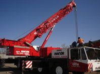
Demag-AC 435
Información
- Capacidad: 150 toneladas
- Pluma telescópica: 50 metros
- Con Plumín: 67 metros
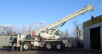
Grove AT 750 BE
Información
- Capacidad: 45 toneladas
- Pluma telescópica: 35 metros
- Con Plumín: 49 metros
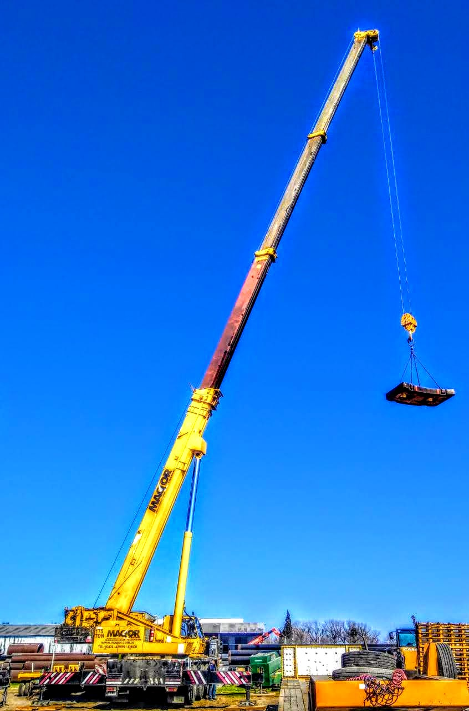
Grove GMK 5160
Información
- Capacidad: 175 toneladas
- Pluma telescópica: 49 metros
- Con Plumín: 92 metros
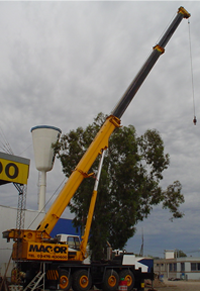
Krupp 70 GMT - AT
Información
- Capacidad: 70 toneladas
- Pluma telescópica: 38 metros
- Con Plumín: 53 metros
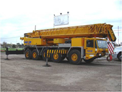
Luna AT 120-47
Información
- Capacidad: 120 toneladas
- Pluma telescópica: 42 metros
- Con Plumín: 64 metros
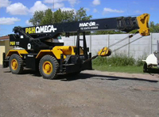
P&H Omega 20
Información
- Capacidad: 18 toneladas
- Pluma telescópica: 26 metros
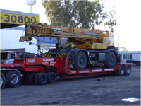
Tadano TR 500
Información
- Capacidad: 50 toneladas
- Pluma telescópica: 42 metros
- Con Plumín: 56 metros
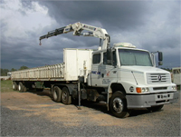
Hidrogrua N25000
Información
- Capacidad: 25 toneladas
- Montada sobre camion
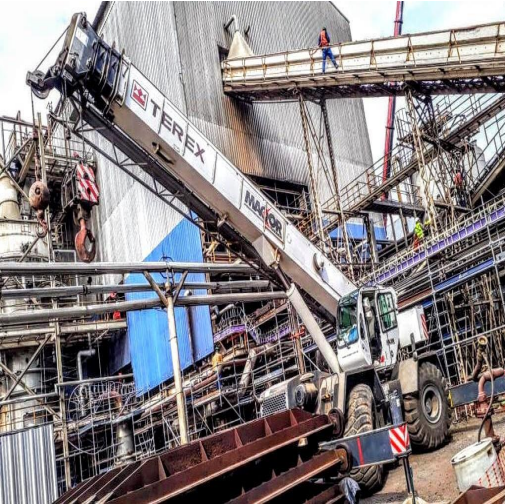
Terex RT665
Información
- Capacidad: 60 toneladas
- Pluma telescópica: 34 metros
- Con Plumín: 51 metros
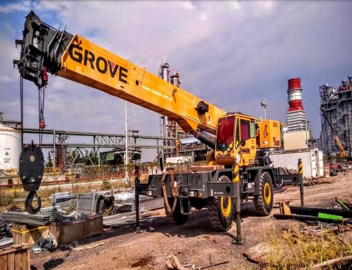
Grove RT540E-2
Información
- Capacidad: 40 toneladas
- Pluma telescópica: 31 metros
- Con Plumín: 39 metros
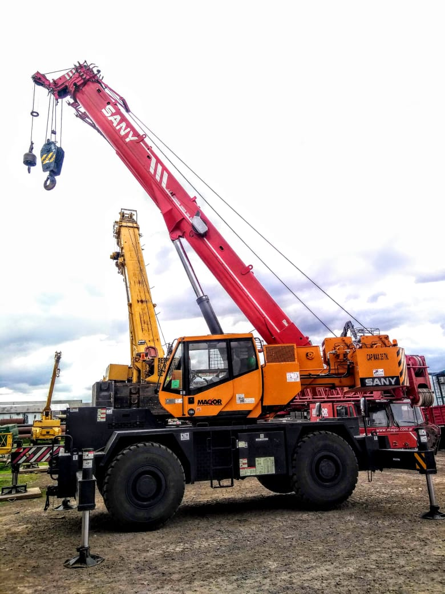
Sany SRC40
Información
- Capacidad: 35 toneladas
- Pluma telescópica: 31,5 metros
- Con Plumín: 44,5 metros
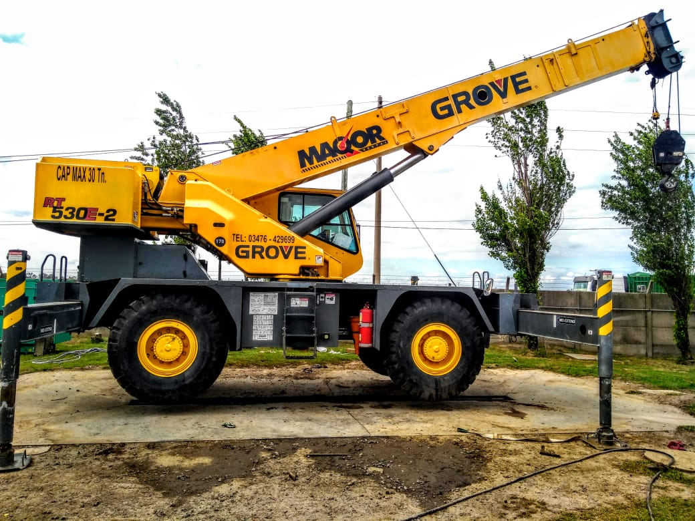
Grove RT530E-2
Información
- Capacidad: 30 toneladas
- Pluma telescópica: 29 metros
- Con Plumín: 37 metros
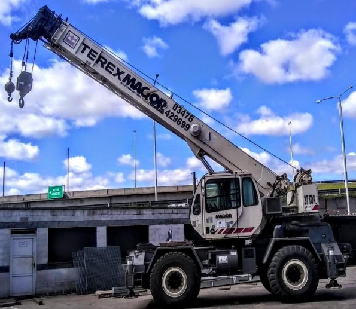
Terex 30TN
Información
- Capacidad: 30 toneladas
- Pluma telescópica: 29 metros
- Con Plumín: 37 metros
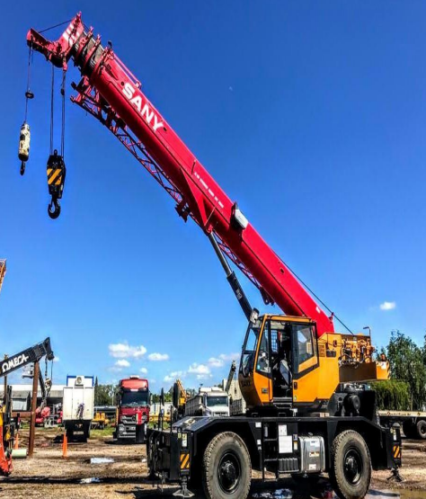
Sany SRC25
Información
- Capacidad: 25 toneladas
- Pluma telescópica: 31.5 metros
- Con Plumín: 44.5 metros
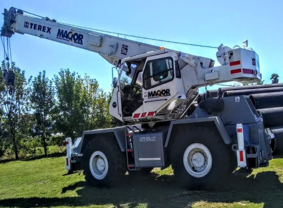
Terex 25TN
Información
- Capacidad: 25 toneladas
- Pluma telescópica: 21 metros
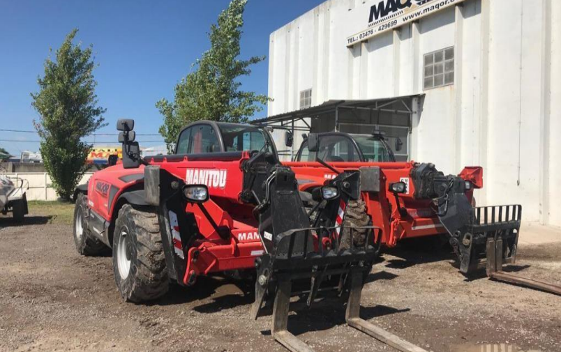
Manipuladores
Información
- Capacidad: 3,5 a 4 toneladas
- Pluma telescópica: 10 a 18 metros
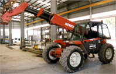
Manitou 928
Información
- Capacidad: 2,8 a 3,7 toneladas
- Pluma telescópica: 8 a 12 metros
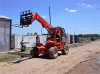
Manitou 1337
Información
- Capacidad: 3,5 a 4 toneladas
- Pluma telescópica: 10 a 18 metros